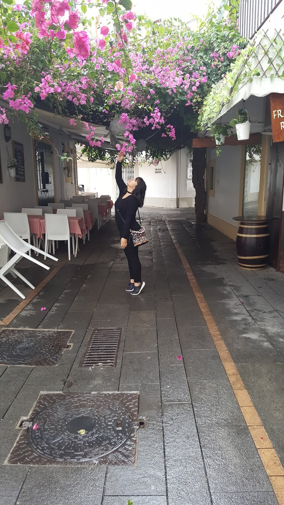

Il était une fois, mille et une couleur
Depuis toute petite, mes yeux sont attirés par la vibrance des couleurs. Au fil du temps, je suis devenu passionnée par l’élégance et le charme qu’elles peuvent inspirer. J’aime embellir tout ce qui passe entre mes mains, je m’applique à atteindre le coeur des personnes, à travers le sens véhiculé par mes illustrations.
Je deviens designer parce que cet univers m’a toujours fasciné. Clairement, le WEBDESIGN est le métier où je peux combiner passions et techniques pour aboutir à des réalisations à la fois ergonomiques et pittoresques.
